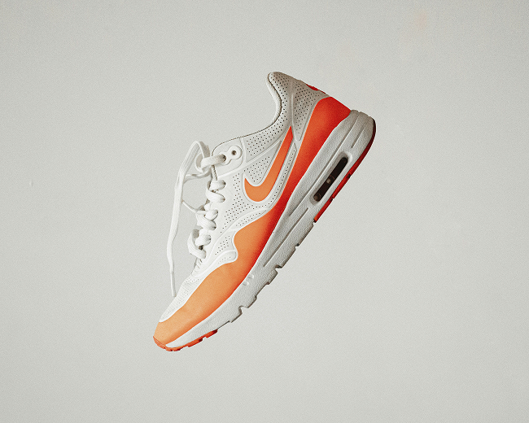

149,99$
Ce soulier de sport présente un design moderne et attrayant, combinant élégance et performance. Sa couleur principale est le blanc, rehaussée par des détails orange qui lui donnent un aspect dynamique et énergique. La tige est fabriquée dans un matériau léger et respirant, offrant un bon confort au pied. Les lacets blancs s’intègrent harmonieusement au design général. Sur le côté, un logo orange attire le regard et renforce le style sportif de la chaussure. La semelle est épaisse et conçue pour offrir un bon amorti lors des entraînements. Une unité d’amorti visible au talon ajoute une touche moderne tout en améliorant le confort. Les accents orange présents sur la semelle créent une belle continuité avec le reste du soulier. Son apparence polyvalente permet de le porter aussi bien pour le sport que pour les activités quotidiennes. Dans l’ensemble, cette chaussure allie confort, style et fonctionnalité.